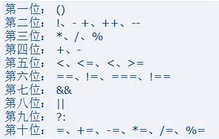

基本运算符操作
1.1、加法运算符+
1.1.1、Number+Number=Number
1.1.2、String+unknown=String
1.1.3、NaN+unknown(非String)=NaN
1.1.4、非Number且非String类型相加会自动转为Number再运算
1.2、减法运算符-
1.2.1、Number-Number=Number
1.2.2、NaN-unknown=NaN、unknown-NaN=NaN=NaN
1.2.3、非Number类型相减会自动转为Number再运算（字符串类型不再例外）
1.3、乘法运算符*（规律和减法一样）
1.4、除法运算符/（正常除法，并非整除，分母不能为0，否则返回Infinity，其他规律同减法）
1.5、取余运算符%（分母不能为0，否则返回NaN，其他规律同减法）
2.1、正号运算符+：对原数据无影响
2.2、负号运算符-：对原数据取负值
3.1、简单赋值运算符=：值赋值、地址赋值
=左边必须是变量，多个赋值运算符组成的赋值表达式具有右结合性。
3.2、复杂赋值运算符+=、-=、*=、/=、%=
先计算=右边的内容，例如a*=3+5相当于a=a*(3+5)
4.1、自增运算符++
++i和i++都相当于i=i+1
4.2、自减运算符--
--i和i--都相当于i=i-1
4.3、位置问题
变量在运算符前：先用后变；a=2+b++相当于a=2+b;b=b+1;
变量在运算符后：先变后用：a=2+++b相当于b=b+1;a=2+b;
大于 > 值比较
小于 < 值比较
大于等于 >= 值比较
小于等于 <= 值比较
等于 == 值比较
不等于 != 值比较
全等于 === 类型和值比较
不全等于 !== 类型和值比较
注意点：两边都是字符串对比时，比较双方的Unicode码，其他情况下，非数值比较会先转为数值再进行比较。
NaN!=NaN虽然：然而，null!=0
数值即不大于NaN也不小于NaN
6.1、与运算符&&，全真才真
短路写法：左边为假，右边代码将不再运行
返回值：左边为假，则返回左边，否则返回右边
6.2、或运算符||，全假才假
短路写法：左边为真，右边代码将不再运行
返回值：左边为真，则返回左边，否则返回右边
6.3、非运算符！，颠倒黑白
两次非运算会返回原始数据的Boolean类型值，即相当于使用了Boolean()函数
多个表达式连接组成逗号表达式，最后一个表达式的值为整个逗号表达式的值
a=(a1=1+2,a2=2+3,a3=3+4);结果为a=a3;
condition?value1:value2; ?问号左边条件为真，取冒号左边的值，否则取冒号右边的值。

除了赋值运算符是右结合性外，其他大部分运算符都是左结合性
用户从键盘输入3个整数, 找到最大值并输出?